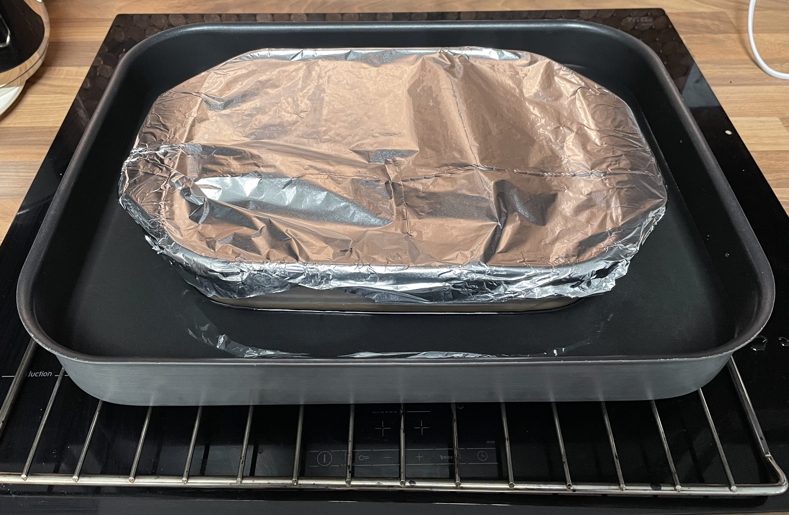
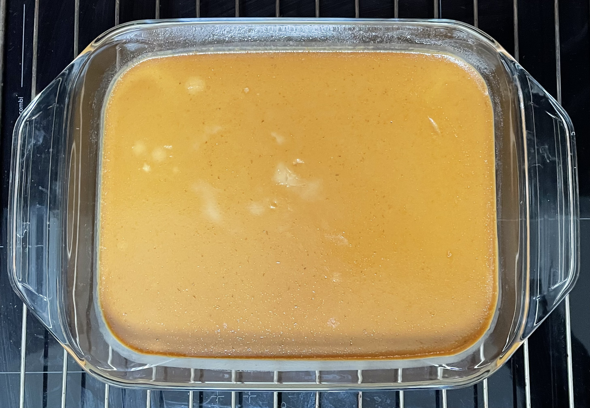
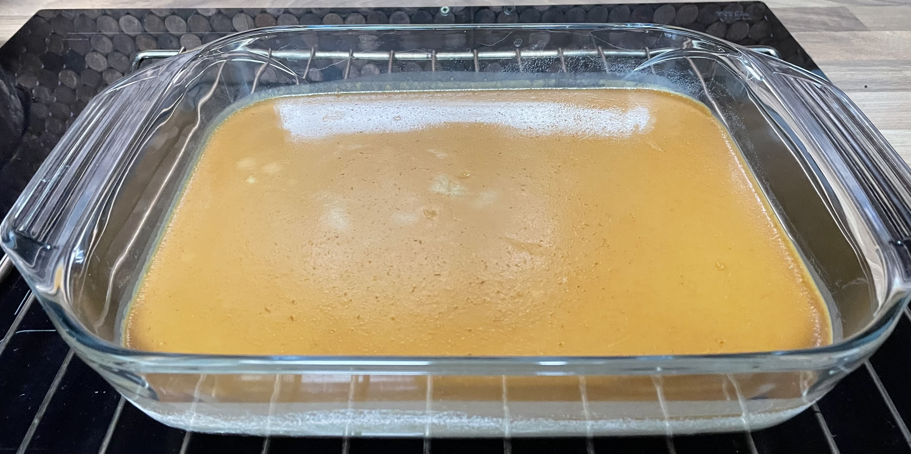

Ancho & orange flan
Chilli
- Soak in hot water till soft
- 15g Ancho chilli de-stemmed
- Remove stalk
- Squeeze out liquid
- Scrape out chilli seeds
Caramel
- Make caramel with
- Pour caramel into baking tray to set
Custard
- Blitz in ninja
- 300ml (309g) whole milk
- zest 1 orange
- ancho chilli softened and chopped
- Pour into bowl
- Whisk in
- 400g condensed milk
- 100ml (98g) double cream
- 3 medium eggs
- 1 tsp vanilla extract
- Strain into baking tray
- Cover tray with foil
- Arrange water bath with tray covered up to halfway
- Bake for 40-50 mins at 150°C
- Remove from water bath and leave to cool
- Chill for 3 hours or overnight in fridge
Serving
- Go round custard to bottom of tray with sharp knife to help release
- Place serving plate on top of tray
- Turnover and move quickly to side to release, might take >1 tries
- Cut into 6 portions
Notes
Pics


